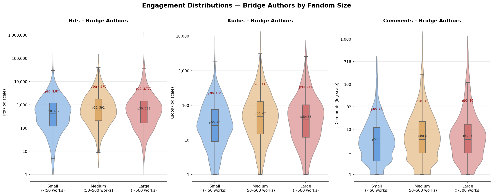
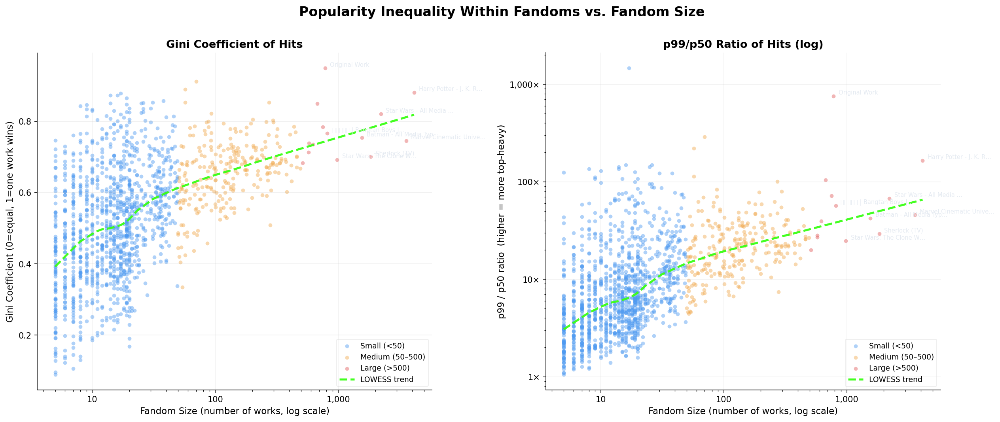
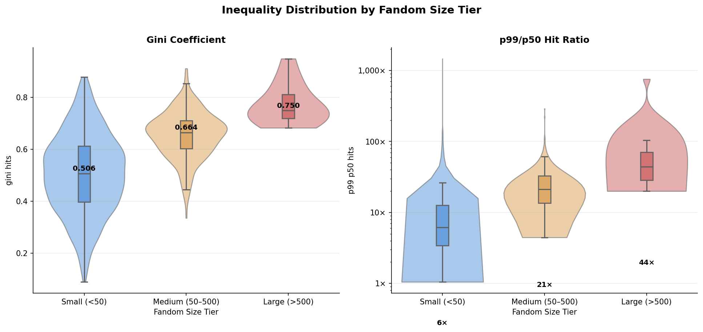

In the massive digital archive of Archive of Our Own (AO3), millions of fanfictions exist across thousands of distinct fandoms. While individual fandoms possess their own dedicated writer communities, authors frequently cross boundaries to write in multiple universes. This article visualizes the structured relationships (co-occurrences and clustering) between fandoms, maps crossover authors acting as bridges across distinct communities, and evaluates how popularity dynamics differ across fandom sizes.
1. The Long Tail of Fandom & The Rich-Get-Richer Effect
AO3's fandom landscape is deeply unequal. While thousands of niche communities exist with just a handful of works, a small number of mega-fandoms (like the Marvel Cinematic Universe or Harry Potter) accumulate tens of thousands. To explore this, we segmented fandoms into three size tiers based on the number of works under each primary fandom tag:
🔵 Small — fewer than 50 works | 🟠 Medium — 50 to 500 works | 🔴 Large — more than 500 works
Our cleaned dataset spans the full distribution: the average occurrences per fandom is 8.63 with a median of 1.00, confirming a massive long tail of niche fandom tags. Yet when we look at raw work counts, the distribution of fandom sizes in our data skews toward medium and large communities.

Crucially, the long tail is not just a counting artifact — it reflects a fundamentally different popularity economy. While the median hit count is comparable across fandom sizes, the upper tail (p90, p99) is wildly skewed toward large fandoms. The plot below shows violin distributions of Hits, Kudos, and Comments across fandom size tiers, restricted to works by bridge authors (authors active in multiple distinct fandoms):

The data confirms the hypothesis: for bridge authors writing in large fandoms, the p90 for Hits reaches 3,777 vs. 2,874 in small fandoms — a moderate gap at the 90th percentile. But at the p99, large fandoms reach 30,689 vs. 14,719 in small fandoms — more than 2× higher. The median (p50), however, remains broadly comparable (~400–600 Hits), meaning the rich-get-richer effect is a tail phenomenon, not a universal one.
Measuring Inequality: Gini Coefficient & p99/p50
To quantify this inequality more rigorously at the per-fandom level, we computed two complementary metrics on the distribution of Hits across all works within each fandom:
Borrowed from economics, the Gini coefficient measures how unevenly a quantity is distributed across a population. For a fandom with n works sorted by ascending hits (x1 ≤ x2 ≤ … ≤ xn):
G = (2 · Σi i·xᵢ) / (n · Σxᵢ) − (n+1)/n
G = 0 means every work in the fandom has exactly the same number of hits (perfect equality). G = 1 means one single work absorbs all the hits (maximum concentration). A Gini of 0.75, for instance, is comparable to some of the most unequal real-world income distributions.
The p99/p50 ratio is a more intuitive, percentile-based measure of tail concentration. It answers the question: "how many times more hits does a blockbuster work (top 1%) receive compared to the typical (median) work in the same fandom?"
p99/p50 = Hits at the 99th percentile / Hits at the 50th percentile
A ratio of 44× (observed for large fandoms) means the top-1% work gets 44 times more hits than the median work. Unlike Gini, which summarises the entire distribution, p99/p50 focuses purely on the extremes — making it sensitive to blockbuster outliers.
We computed both metrics for all 1,424 fandoms with at least 5 works, then plotted them against fandom size (log scale). A LOWESS smoothing curve (dark blue dashed line) captures the overall trend through the scatter:

Both metrics show a clear positive relationship with fandom size (Spearman r = +0.50 for Gini, +0.57 for p99/p50). The violin plots below summarise the distributions within each size tier:

The pattern is striking. In a large fandom, the top-1% work receives on average 44× more hits than the median — a level of concentration comparable to extreme economic inequality. In a small fandom, that ratio drops to just 6×. Notably, Original Work (non-IP fan fiction) has the highest Gini (0.95) and a p99/p50 of 756× — driven by a handful of viral stories far outpacing thousands of niche pieces.
2. Fandom Co-occurrences & Co-Clustering
To understand how fandoms relate structurally, we analyzed works tagged with multiple fandoms. When tags appear together on a work, they represent a co-occurrence link. Instead of simple filtering, we built a co-occurrence network on all 8,205 unique fandom tags, clustering tags with a high similarity threshold into cohesive clusters before filtering.
This pre-clustering method successfully resolved noise and giant components, merging closely related tags (such as consolidating Captain Marvel (2019) into the parent Marvel Cinematic Universe Cluster) while isolating accidental crossover links.
The interactive map above allows you to explore these co-occurrence relations. You can filter the minimum work occurrences threshold in real-time, search for specific fandom tags to zoom in, and see how nodes readjust slowly and smoothly to the layouts.
3. Authors as Bridges Across Fandoms
When authors write in multiple distinct fandoms (via separate, non-crossover works), they build structural bridges between communities. We mapped this cross-cluster communication network by calculating the Author Overlap Index between all cluster pairs:
AO(X, Y) = |Authors(X) ∩ Authors(Y)| / min(|Authors(X)|, |Authors(Y)|)
In the bridge map above, each node represents a fandom cluster (its size proportional to the unique author count). Adjusting the "Min Bridge Authors" slider dynamically adjusts the network, showcasing how strong or weak the connections are. You can use the Yes/No buttons to toggle the visibility of isolated clusters.
4. Do Bridge Authors Drive Popularity in Smaller Fandoms?
We investigated whether bridge authors achieve relatively higher popularity in smaller fandoms. For each bridge author's work, we calculated its popularity ratio (e.g., Hits, Kudos, or Comments) compared to the median values within that specific fandom:

By calculating the Spearman rank correlation coefficient, we found that for Hits binned by the first fandom tag, the correlation is slightly negative (-0.0145, p-value: 7.202e-02). This indicates a very minor, statistically non-significant negative correlation, suggesting that while bridge authors are highly active, their popularity relative to the fandom baseline remains mostly uniform across both small and large fandoms — consistent with the finding that the rich-get-richer effect is concentrated at the extreme tail.